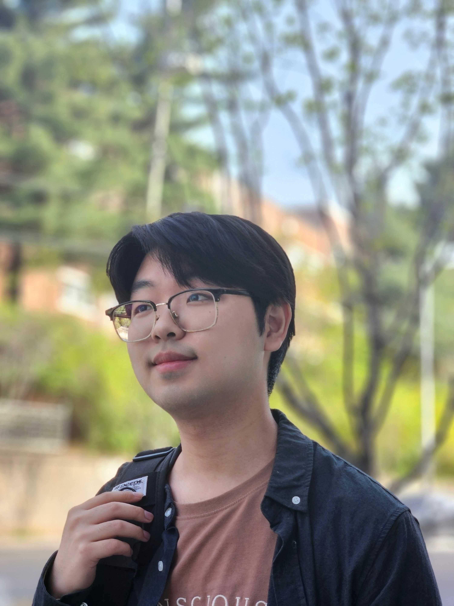
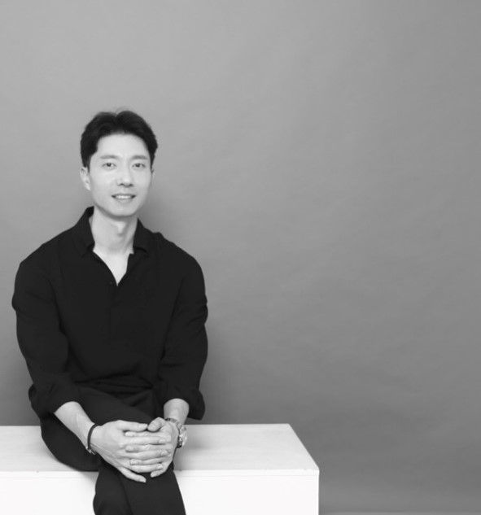
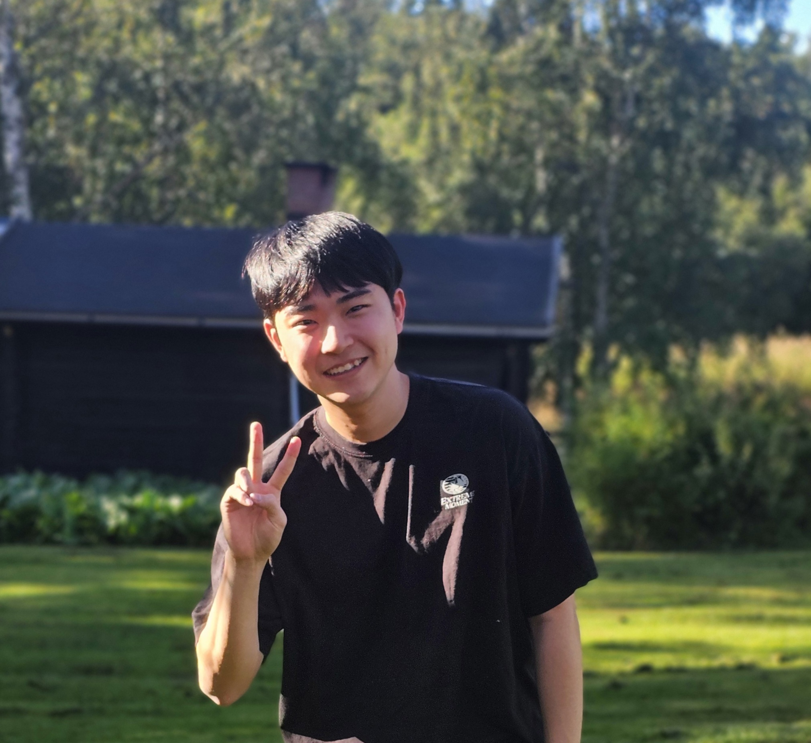
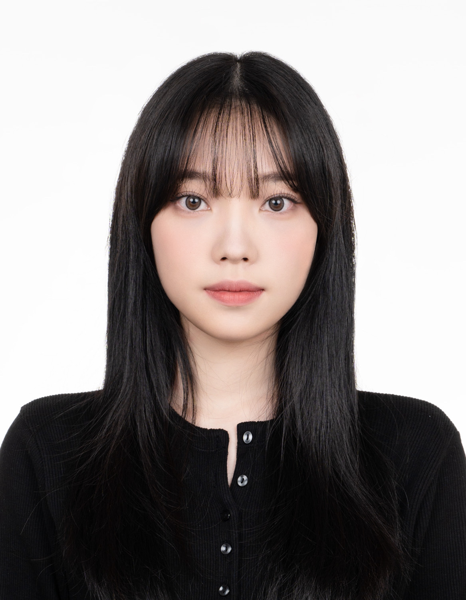

M.S. Student · 2025–Present
Junhyun Kim
김준현
Generative Distribution Learning for Sparse Seismic Acquisition Array Design
People
Faculty, students, and collaborators working across seismic imaging, sensing, and Earth-system applications.

Principal Investigator
Assistant Professor · Department of Geophysics, Kangwon National University
Woodon Jeong is an exploration geophysicist specializing in seismic data processing, subsurface imaging, and distributed fiber-optic sensing for geological, environmental, and engineering applications. Before joining Kangwon National University in 2023, he spent eight years as a geophysicist at Saudi Aramco’s EXPEC Advanced Research Center, developing seismic acquisition, processing, noise attenuation, deblending, deghosting, and imaging technologies for large-scale land and marine data.
His current research extends advanced seismic imaging and sensing beyond conventional resource exploration toward active faults, submarine cables, deep geological repositories, polar environments, and broader Earth-system science.
Laboratory members
Current M.S. students and their primary research topics.

M.S. Student · 2025–Present
김준현
Generative Distribution Learning for Sparse Seismic Acquisition Array Design

M.S. Student · 2025–Present
박찬하
Imaging the Offshore Yangsan Fault System and Branch Faults in SE Korea Using Submarine Fiber-Optic DAS

M.S. Student · 2025–Present
조재훈
High-Resolution Imaging of a Gas-Chimney Structure in a Beaufort Sea Mud Volcano

M.S. Student · 2026–Present
김소은
Vessel-Related Signal Detection and Processing in Submarine Telecommunication Cable DAS Data

M.S. Student · 2026–Present
최진이
Research topic under development
Former members
Former M.S. students, thesis research, and current affiliations.
Master's Thesis
Common-Mode Noise Attenuation for Distributed Acoustic Sensing Data
분포형 음향 계측 자료의 공통모드 잡음 제거 연구
Master's Thesis
Attenuation of Shear Noise in Seafloor Vertical Geophone Data Using Hybrid Radon Transform